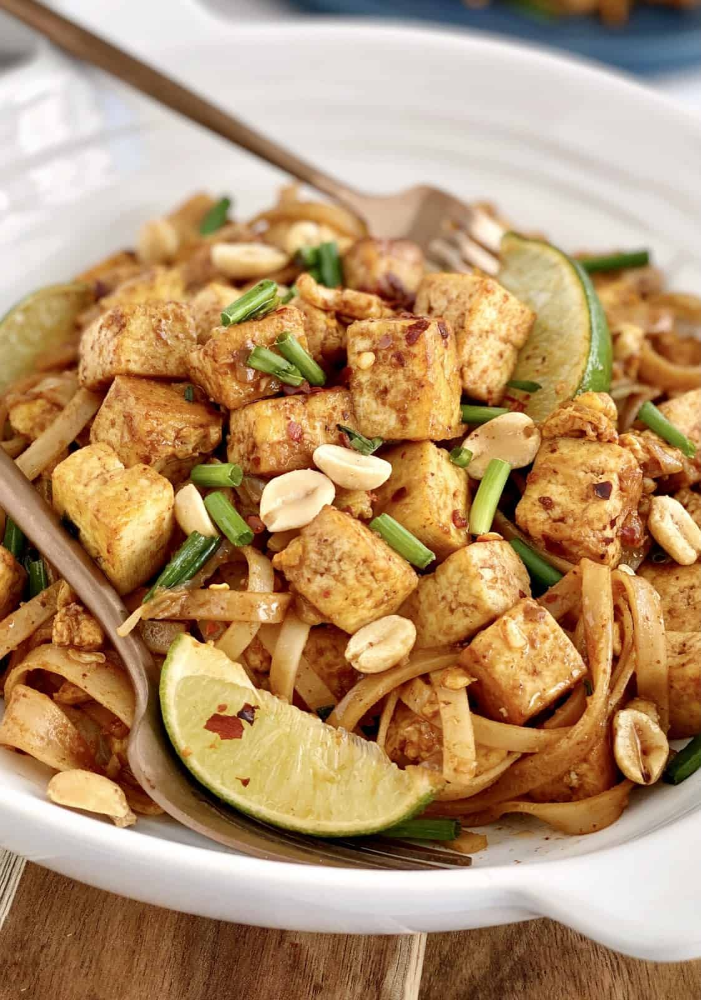

Pad Thai
Home

Ingredients
- 1 package Pad Thai Rice Noodle
- 1 block Firm of Extra Firm Tofu
- 2 tb Vegetable Oil
- 6 Green Onion Stalks
- 2 c Bean Sprouts
- 4 Limes
- 6 tb Tamarind Concentrate or Paste
- 1/4 c Pineapple Juice
- 2 tb Rice Vinegar
- 1/4 c Soy Sauce
- 1/2 c Sugar (preferably palm or brown, but white is fine)
- 2 tb Sriracha
- 1/2 c Roasted Peanuts
Steps
- Cook rice noodles according to packaging.
- Combine 2 tb lime juice from squeezed lime, tamarind,
pineapple juice, soy sauce, sugar, and sriracha to make sauce.
- Squeeze excess water from tofu and pat dry with paper towels, then cut into 1 inch cubes.
- Slice green onion in half and remove roots. Take the end closer to the roots and chop into 2 inch slices on a bias.
Take the other end and cut into thin circles (this will be for garnish).
- Cut remaining limes into quarters.
- Finely chop or crush peanuts
- Fry tofu in Wok or Skillet on medium high heat until browned.
Then, reduce heat to medium and add the long slices of green onion.
Let wilt for a moment and then add half of the quantity (1 cup) of bean sprouts.
- Reduce to low and add the sauce and then the cooked rice noodles. Mix thoroughly.
- Garnish with raw bean sprouts, chopped peanuts, thinly sliced raw green onion, and lime quarters.